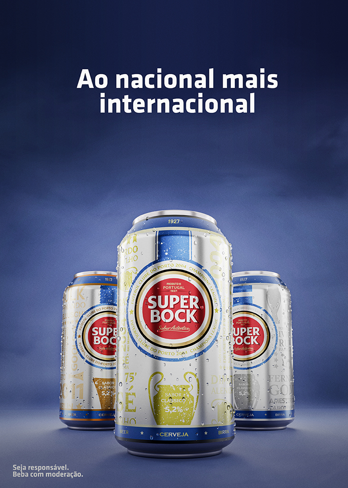
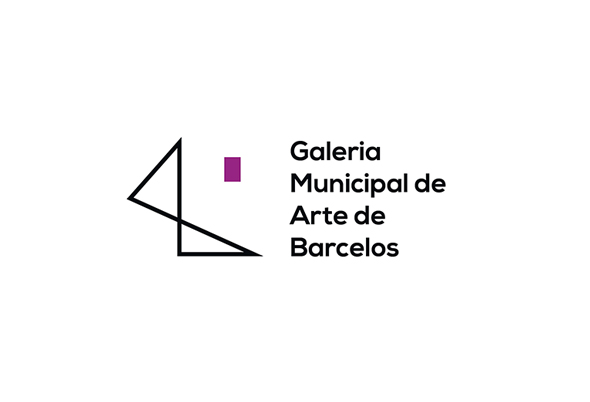
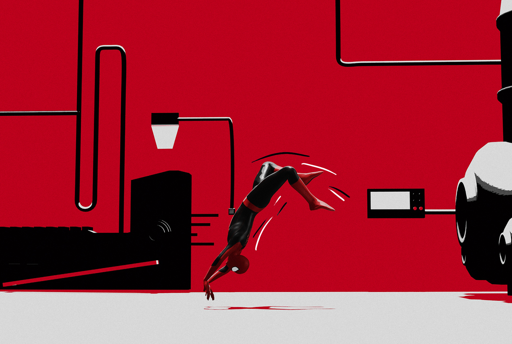
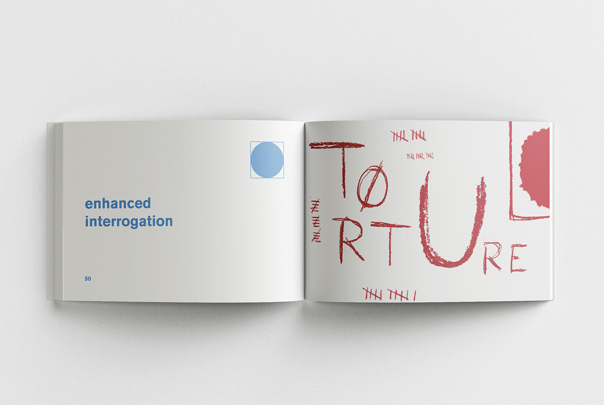
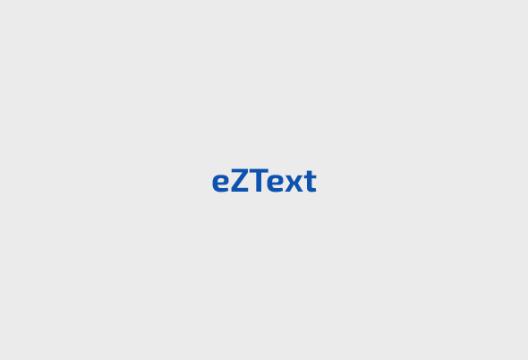
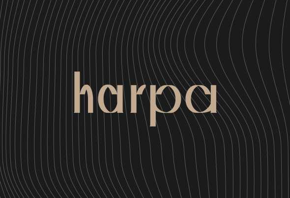
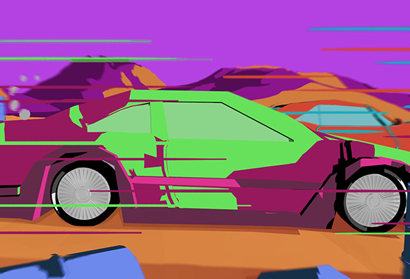
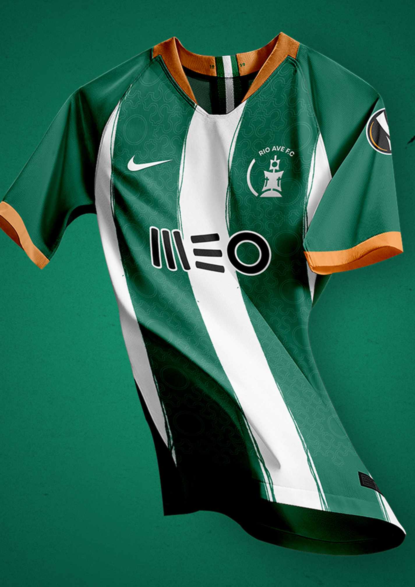

andrebranco
sobre
andrebranco
sobre
Superbock | F.C.Porto
Packaging | 3D

Galeria Municipal de Arte de Barcelos
Identidade Visual

Spider-Man BWB
Animação 3D

this is not a euphemism
Design Gráfico

eZText
UI/UX | Design Inclusivo

eZText
UI/UX | Design Inclusivo
harpa
Tipografia | Web Design

Final Fit
Animação2D/3D | Som Design

Rio Ave
Identidade Visual
